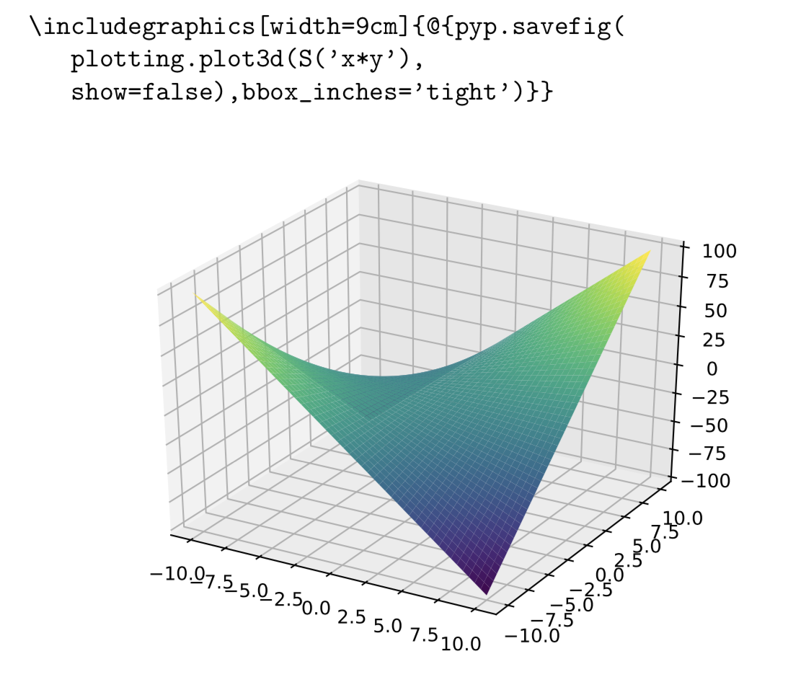

Package pyptex
PypTeX: the Python Preprocessor for TeX
Author: Sébastien Loisel
PypTeX is the Python Preprocessor for LaTeX. It allows one to embed Python code fragments in a LaTeX template file.
Installation
pip install pyptex
- You will also need a LaTeX installation, and the default LaTeX processor is
pdflatex. - You need a Python 3 installation.

Introduction
Assume example.tex contains the following text:
\documentclass{article}
@{from sympy import *}
\begin{document}
$$\int x^3\,dx = @{S('integrate(x^3,x)')}+C$$
\end{document}
The command pyptex example.tex will generate example.pdf,
as well as the intermediary file example.pyptex. PypTeX works by extracting Python
fragments in example.tex indicated by either @{...} or @{{{...}}} and substituting the
corresponding outputs to produce example.pyptex, which is then compiled with
pdflatex example.pyptex, although one can use any desired LaTeX processor in lieu of
pdflatex. The intermediary file example.pyptex is pure LaTeX.
When processing Python fragments, the global scope contains an object pyp that is a
(weakref proxy for a) pyptex object that makes available several helper functions
and useful data. For example, pyp.print("hello, world") inserts the string hello, world
into the generated example.pyptex file.
- The
pyptexexecutable tries to locate the Python 3 executable using/usr/bin/env python3. If this is causing you problems, trypython -u -m pyptex example.texinstead.
Slightly bigger examples
- 2d and 3d plotting tex | pdf
- Matrix inverse exercise tex | pdf
- The F19NB handout for numerical linear algebra at Heriot-Watt university is generated with PypTeX. pdf
Plotting with sympy and matplotlib
PypTeX implements its own matplotlib backend, a thin wrapper around the built-in postscript backend.
The PypTeX backend takes care of generating .eps files and importing them into your document via
\includegraphics. In that scenario, you must do \usepackage{graphicx} in your LaTeX preamble.
The precise "includegraphics" command can be set, e.g. by
pyp.includegraphics=r"\includegraphics[width=0.9\textwidth]{%s}".
To create a plot with sympy, one can do:
sympy.plot(sympy.S('sin(x)+cos(pi*x)'))
At the end of each Python fragment @{...}, PypTeX saves each generated figure to a
x.eps file, and these figures are then inserted via includegraphics into the generated
.tex file. Once a figure has been auto-showed in this manner, it will not be
auto-showed again. The auto-show behavior can be disabled by setting pyp.autoshow = False.
Figures can also be displayed manually via pyp.pp('{myfig}).
plt.plot([1,2,3],[2,1,4])
Template preprocessing vs embedding
PypTeX is a template preprocessor for LaTeX based on the Python language. When Python
is embedded into LaTeX, Python code fragments are identified by LaTeX commands that use
standard TeX notation, such as \py{...}. The code extraction is performed by TeX, then
the code fragments are executed by Python, finally TeX is run again to merge the
Python-generated LaTeX fragments back into the master file.
By contrast, PypTeX is a preprocessor that extracts Python code fragments indicated by
@{...} using regular expressions. Once the relevant Python outputs are collected, they
are also inserted by regular expressions. LaTeX is only invoked once, on the final output.
There may be specialized cases where Python embeddings are preferred, but we found
that template preprocessing is superior to embedding. There are many reasons (that
will be described elsewhere in detail) but we briefly mention the following reasons:
1. Embeddings can result in deadlock. If we have \includegraphics{dog.png}, but
dog.png is generated by a Python fragment, the first run of LaTeX will fail because
dog.png does not yet exist. Since LaTeX failed, it did not extract the Python fragments
and we cannot run the Python code that would generate dog.png unless we temporarily
delete the \includegraphics{dog.png} from a.tex. In our experience, deadlock
occurs almost every time we edit our large .tex files.
2. Embedding makes debugging difficult. By contrast, PypTeX treats Python's debugger Pdb
as a first-class citizen and everything should work as normal. Please let us know if some
debugging task somehow fails for you.
3. Performance. Substituting using regular expressions is faster than running the
LaTeX processor.
Pretty-printing template strings from Python with pp
The function pyp.pp(X) pretty-prints the template string X with substitutions
from the local scope of the caller. This is useful for medium length LaTeX fragments
containing a few Python substitutions:
from sympy import *
p = S('x^2-2*x+3')
dpdx = p.diff(S('x'))
pyp.print(pyp.pp('The minimum of $y=@p$ is at $x=@{solve(dpdx)[0]}$.'))
Caching
When compiling a.tex, PypTeX creates a cache file a.pickle. This file is
automatically invalidated if the Python fragments in a.tex change, or if some
other dependencies have changed. Dependencies can be declared from inside a.tex via
pyp.dep(…). Caching can be completely disabled with pyp.disable_cache=True,
and users can delete a.pickle as necessary.
Scopes
For each template file a.tex, b.tex, … a private global scope is created for
executing Python fragments. This means that Python fragments in a.tex cannot use
functions or variables defined in b.tex, although shared functions could be
implemented in a shared c.py Python module that is imported into
a.tex and b.tex.
In particular, when does pyp.input('b.tex') from a.tex, the code in b.tex cannot
use functions and data generated in a.tex. This means that b.tex is effectively
a "compilation unit" whose semantics are essentially independent of a.tex.
For any given a.tex file, its private global scope is initialized with the
standard Python builtins and with a single pyp object, which is a weakref.proxy
to the pyptex('a.tex') instance. We use a weakref.proxy because the global
scope of a.tex is a dict stored in the (private) variable pyp.__global__. The
use of weakref.proxy avoids creating a circular data structure that would otherwise
stymie the Python garbage collector. For most purposes, this global pyp variable
acts exactly like a concrete pyptex instance.
TeXShop
If you want to use TeXShop on Mac, put the following into ~/Library/TeXShop/Engines/pyptex.engine and restart TeXShop:
#!/bin/bash
pyptex $1
Expand source code
r"""
## PypTeX: the Python Preprocessor for TeX
### Author: Sébastien Loisel
PypTeX is the Python Preprocessor for LaTeX. It allows one to embed Python
code fragments in a LaTeX template file.
# Installation
`pip install pyptex`
1. You will also need a LaTeX installation, and the default LaTeX processor is `pdflatex`.
2. You need a Python 3 installation.
<img alt="An example plot with PypTeX" width="500" src="examples/brochure.png">
# Introduction
Assume `example.tex` contains the following text:
\documentclass{article}
@{from sympy import *}
\begin{document}
$$\int x^3\,dx = @{S('integrate(x^3,x)')}+C$$
\end{document}
The command `pyptex example.tex` will generate `example.pdf`,
as well as the intermediary file `example.pyptex`. PypTeX works by extracting Python
fragments in `example.tex` indicated by either `@{...}` or `@{{{...}}}` and substituting the
corresponding outputs to produce `example.pyptex`, which is then compiled with
`pdflatex example.pyptex`, although one can use any desired LaTeX processor in lieu of
`pdflatex`. The intermediary file `example.pyptex` is pure LaTeX.
When processing Python fragments, the global scope contains an object `pyp` that is a
(weakref proxy for a) `pyptex.pyptex` object that makes available several helper functions
and useful data. For example, `pyp.print("hello, world")` inserts the string `hello, world`
into the generated `example.pyptex` file.
* The `pyptex` executable tries to locate the Python 3 executable using `/usr/bin/env python3`.
If this is causing you problems, try `python -u -m pyptex example.tex` instead.
# Slightly bigger examples
* 2d and 3d plotting [tex](examples/plots.tex)
|
[pdf](examples/plots.pdf)
* Matrix inverse exercise [tex](examples/matrixinverse.tex)
|
[pdf](examples/matrixinverse.pdf)
* The F19NB handout for numerical linear algebra at Heriot-Watt university is generated with PypTeX. [pdf](https://www.macs.hw.ac.uk/~sl398/notes.pdf)
# Plotting with `sympy` and `matplotlib`
PypTeX implements its own `matplotlib` backend, a thin wrapper around the built-in postscript backend.
The PypTeX backend takes care of generating `.eps` files and importing them into your document via
`\includegraphics`. In that scenario, you must do `\usepackage{graphicx}` in your LaTeX preamble.
The precise "includegraphics" command can be set, e.g. by
`pyp.includegraphics=r"\includegraphics[width=0.9\textwidth]{%s}"`.
To create a plot with `sympy`, one can do:
```python
sympy.plot(sympy.S('sin(x)+cos(pi*x)'))
```
At the end of each Python fragment `@{...}`, PypTeX saves each generated figure to a
`x.eps` file, and these figures are then inserted via `includegraphics` into the generated
`.tex` file. Once a figure has been auto-showed in this manner, it will not be
auto-showed again. The auto-show behavior can be disabled by setting `pyp.autoshow = False`.
Figures can also be displayed manually via `pyp.pp('{myfig})`.
```python
plt.plot([1,2,3],[2,1,4])
```
# Template preprocessing vs embedding
PypTeX is a template preprocessor for LaTeX based on the Python language. When Python
is embedded into LaTeX, Python code fragments are identified by LaTeX commands that use
standard TeX notation, such as `\py{...}`. The code extraction is performed by TeX, then
the code fragments are executed by Python, finally TeX is run again to merge the
Python-generated LaTeX fragments back into the master file.
By contrast, PypTeX is a preprocessor that extracts Python code fragments indicated by
`@{...}` using regular expressions. Once the relevant Python outputs are collected, they
are also inserted by regular expressions. LaTeX is only invoked once, on the final output.
There may be specialized cases where Python embeddings are preferred, but we found
that template preprocessing is superior to embedding. There are many reasons (that
will be described elsewhere in detail) but we briefly mention the following reasons:
1. Embeddings can result in deadlock. If we have `\includegraphics{dog.png}`, but
`dog.png` is generated by a Python fragment, the first run of LaTeX will fail because
`dog.png` does not yet exist. Since LaTeX failed, it did not extract the Python fragments
and we cannot run the Python code that would generate `dog.png` unless we temporarily
delete the `\includegraphics{dog.png}` from `a.tex`. In our experience, deadlock
occurs almost every time we edit our large `.tex` files.
2. Embedding makes debugging difficult. By contrast, PypTeX treats Python's debugger Pdb
as a first-class citizen and everything should work as normal. Please let us know if some
debugging task somehow fails for you.
3. Performance. Substituting using regular expressions is faster than running the
LaTeX processor.
# Pretty-printing template strings from Python with `pp`
The function ```pyp.pp(X)``` pretty-prints the template string `X` with substitutions
from the local scope of the caller. This is useful for medium length LaTeX fragments
containing a few Python substitutions:
```python
from sympy import *
p = S('x^2-2*x+3')
dpdx = p.diff(S('x'))
pyp.print(pyp.pp('The minimum of $y=@p$ is at $x=@{solve(dpdx)[0]}$.'))
```
# Caching
When compiling `a.tex`, PypTeX creates a cache file `a.pickle`. This file is
automatically invalidated if the Python fragments in `a.tex` change, or if some
other dependencies have changed. Dependencies can be declared from inside `a.tex` via
`pyp.dep(...)`. Caching can be completely disabled with `pyp.disable_cache=True`,
and users can delete `a.pickle` as necessary.
# Scopes
For each template file `a.tex`, `b.tex`, ... a private global scope is created for
executing Python fragments. This means that Python fragments in `a.tex` cannot use
functions or variables defined in `b.tex`, although shared functions could be
implemented in a shared `c.py` Python module that is `import`ed into
`a.tex` and `b.tex`.
In particular, when does `pyp.input('b.tex')` from `a.tex`, the code in `b.tex` cannot
use functions and data generated in `a.tex`. This means that `b.tex` is effectively
a "compilation unit" whose semantics are essentially independent of `a.tex`.
For any given `a.tex` file, its private global scope is initialized with the
standard Python builtins and with a single `pyp` object, which is a `weakref.proxy`
to the `pyptex('a.tex')` instance. We use a `weakref.proxy` because the global
scope of `a.tex` is a `dict` stored in the (private) variable `pyp.__global__`. The
use of `weakref.proxy` avoids creating a circular data structure that would otherwise
stymie the Python garbage collector. For most purposes, this global `pyp` variable
acts exactly like a concrete `pyptex` instance.
# TeXShop
If you want to use TeXShop on Mac, put the following into `~/Library/TeXShop/Engines/pyptex.engine` and restart TeXShop:
```
#!/bin/bash
pyptex $1
```
"""
from contextlib import suppress
import datetime
import glob
import inspect
import os
import pickle
import re
import string
import subprocess
import sys
import time
import traceback
import weakref
import streamcapture
import numpy
import sympy
import types
import matplotlib
import matplotlib.pyplot
import matplotlib.artist
from pathlib import Path
from matplotlib.backend_bases import Gcf, FigureManagerBase
from matplotlib.backends.backend_ps import FigureCanvasPS
__pdoc__ = {
'pyptex.compile': False,
'pyptex.generateddir': False,
'pyptex.process': False,
'pyptex.resolvedeps': False,
'pyptex.run': False,
'FigureManager': False,
'FigureManager.show': False,
}
__pdoc__['pyptexNameSpace'] = False
class pyptexNameSpace:
def __init__(self,d):
self.__dict__.update(d)
def __str__(self):
return fr'\input{{{self.pyp.pyptexfilename}}}'
def __repr__(self):
return repr(str(self))
def __eq__(self, other):
if isinstance(self, pyptexNameSpace) and isinstance(other, pyptexNameSpace):
return self.__dict__ == other.__dict__
return NotImplemented
######################################################################
# The stuff below makes pyptex into a matplotlib backend
FigureCanvas = FigureCanvasPS
class FigureManager(FigureManagerBase):
def show(self, **kwargs):
pass
__pdoc__['show'] = False
def show(*args, **kwargs):
pass
ppparser = re.compile(r"(@@)|@([a-zA-Z_][a-zA-Z0-9_]*)|@{([^{}}]*)}",re.DOTALL)
pypparser = re.compile(r'((?<!\\)%[^\n]*\n)|(@@)|(@(\[([a-zA-Z]*)\])?{([^{}]+)}|@(\[([a-zA-Z]*)\])?{{{(.*?)}}})', re.DOTALL)
bibentryname = re.compile(r'[^{]*{([^,]*),', re.DOTALL)
stripext = re.compile(r'(.*?)(\.(pyp\.)?[^\.]*)?$', re.DOTALL)
__stringtag__ = "<PypTeX Format String>"
__pdoc__['format_my_nanos'] = False
# Credit: abarnet on StackOverflow
def format_my_nanos(nanos: int):
"""Convert nanoseconds to a human-readable format"""
dt = datetime.datetime.fromtimestamp(nanos / 1e9)
return '{}.{:09.0f}'.format(dt.strftime('%Y-%m-%d@%H:%M:%S'), nanos % 1e9)
__pdoc__['dictdiff'] = False
def dictdiff(A, B):
A = set(A.items())
B = set(B.items())
D = A ^ B
if len(D) == 0:
return None
return next(iter(D))
__pdoc__["filter_exception"] = False
def filter_exception(e):
global __stringtag__
tb = e.__traceback__
if tb is None:
return e
me = tb.tb_frame.f_code.co_filename
while tb.tb_next is not None:
code0 = tb.tb_frame.f_code
code1 = tb.tb_next.tb_frame.f_code
if code1.co_filename == me or code1.co_filename == __stringtag__:
tb.tb_next = tb.tb_next.tb_next
else:
tb = tb.tb_next
return e.with_traceback(e.__traceback__.tb_next)
__pdoc__["__format_exception__"] = False
def __format_exception__(e): # This is a workaround for broken things in Python 3.9
return '\n'.join(traceback.TracebackException(
type(e), e, e.__traceback__,limit=None,compact=True).format())
__pdoc__['exec_and_catch'] = False
def exec_and_catch(cmd,glob,loc,filename,linecount,modes=[eval,exec]):
for k in range(len(modes)):
mode = modes[k]
modename = 'exec' if mode==exec else 'eval'
if k<len(modes)-1:
try:
C = compile(('\n'*linecount)+cmd,filename,mode=modename)
except Exception:
continue
else:
C = compile(('\n'*linecount)+cmd,filename,mode=modename)
ret = mode(C,glob,loc)
return (ret,mode)
class pyptex:
r"""Class `pyptex.pyptex` is used to parse an input (templated) `a.tex` file
and produce an output `a.pyptex` file, and can be used as follows:
`pyp = pyptex('a.tex')`
The constructor reads `a.tex`, executes Python fragments and performs relevant
substitutions, writing `a.pyptex` to disk. The contents of `a.pyptex` are also
available as `pyp.compiled`.
"""
def genname(self, pattern: str = 'fig{gencount}.eps'):
r"""Generate a filename
To produce an automatically generated filename, use the statement
`pyp.genname()`, where `pyp` is an object of type `pyptex`, for parsing a
given file `a.tex`. By default, this will generate the name
`'a-generated/fig{gencount}.eps'`.
The subdirectory can be overridden by overwriting `pyp.gendir`,
and `gencount` denotes `pyp.gencount`. Any desired pattern can be used,
for example:
`name = pyp.genname('hello-{gencount}-{thing}.txt')`
will return something like `'a-generated/hello-X-Y.txt'`, where
`X` is `pyp.gencount` and `Y` is `pyp.thing`.
`pyp.genname()` does not actually create the file. `pyp.genname()` increments
`pyp.gencount` every time it is called.
"""
self.gencount += 1
return f'{self.gendir}/{pattern.format(**self.__dict__)}'
def __setupfig__(self, fig):
if not hasattr(fig,'__FIGNAME__'):
figname = self.genname()
Path(figname).touch()
self.dep(figname)
fig.__FIGNAME__ = figname
if not hasattr(fig,'__IG__'):
fig.__IG__ = (self.includegraphics%figname)
if not hasattr(fig,'drawn'):
fig.drawn = False
return fig.__IG__
def showall(self):
for num, figmanager in enumerate(Gcf.get_all_fig_managers()):
fig = figmanager.canvas.figure
self.__setupfig__(fig)
if fig.drawn:
pass
else:
self.print(fig)
def generateddir(self):
"""This is an internal function that creates the generated directory."""
self.gendir = f'{self.filename}-generated'
if not os.path.exists(self.gendir):
os.makedirs(self.gendir)
self.gencount = 0
def freeze(self):
"""'Freezes' the global scope of the caller by performing a shallow copy and copying it to
`pyp.__frozen__`
See also `pyptex.clear()`"""
self.__frozen__ = inspect.stack()[1][0].f_globals.copy()
def clear(self):
"""Clears all global variable.
pyptex.clear() clears all the global variables of the caller. Example usage:
```python
a = 1
print(a) # this prints 1
pyp.clear()
print(a) # this raises an exception because
# a is now undefined.
```
The global scope is restored from the dictionary `pyp.__frozen__`, which initially only contains
the pyp object and the `__builtins__` module. One can add more items to the `__frozen__` dict, e.g.
by importing some standard module. For example,
```python
my_variable = 78
import sys
pyp.freeze() # This freezes my_variable and sys.
foo = 1 # Now foo is defined...
pyp.clear()
# ...Now foo is undefined, but my_variable is still 78,
# and the sys module is still available.
```
Note that `pyp.freeze()` performs a shallow copy, so:
```python
a = [1,2,3]
pyp.freeze() # a = [1,2,3] is now in the frozen scope.
a[1] = 7 # Now a = [1,7,3] in the global scope.
pyp.clear()
# Still a = [1,7,3] because the scope copy was shallow.
```
"""
foo = self.__frozen__
bar = inspect.stack()[1][0].f_globals
for k,v in foo.items():
bar[k] = v
kk = list(bar.keys())
for k in kk:
if k not in foo:
del bar[k]
def __init__(self, texfilename, argv=None, latexcommand=False):
r"""`pyp = pyptex('a.tex')` reads in the LaTeX file a.tex and locates all
Python code fragments contained inside. These Python code fragments are
executed and their outputs are substituted to produce the `a.pyptex` output file.
`pyp = pyptex('a.tex', argv)` passes "command-line arguments". The pyptex
command-line passes `sys.argv[2:]` for this parameter. If omitted, `argv`
defaults to `[]`. If using PypTeX as an templating engine to generate
multiple documents from a single source `a.tex` file, one should use
the `argv` parameter to pass in the various side-parameters needed to generate
each document. For example, `a.tex` might have the line "Dear @{pyp.argv[0]}""
One could produce a letter to John by doing `pyp = pyptex('a.tex', ['John'])`.
`pyp = pyptex('a.tex', argv, latexcommand)` further executes a specific shell
command once `a.pyptex` has been written to disk (e.g. `pdflatex {pytexfilename}`).
The default value of `latexcommand` is `False`, in which case no shell command
is executed.
Some salient fields of the `pyp=pyptex('a.tex')` class are:
* `pyp.filename = 'a'` (so `a.tex`, with the extension stripped).
* `pyp.texfilename = 'a.tex'`.
* `pyp.cachefilename = 'a.pickle'`.
* `pyp.bibfilename = 'a.bib'`, used by the `pyp.bib()` function.
* `pyp.pyptexfilename = 'a.pyptex'`.
* `pyp.auxfilename = 'a.aux'`, useful in case bibtex is used.
* `pyp.latex = "pdflatex --file-line-error --synctex=1"`.
One may overwrite this in a.tex to choose a different latex engine, e.g.
`pyp.latex = "latex"`.
* `pyp.latexcommand` defaults to `False`, but the command-line version of `pyptex`
uses something like.
`r"{latex} {pyptexfilename} && (test ! -f {bibfilename} || bibtex {auxfilename})"`
The relevant substitutions are performed by `string.format` from `pyp.__dict__`.
* `pyp.disable_cache = False`, set this to `True` if you want to disable the `a.pickle`
cache. You shouldn't need to do this but if your Python code is nondeterministic
or if tracking dependencies is too hard, disabling all caching will ensure
that `a.pyptex` is correctly compiled into `a.pdf` and that a stale cache is
never used.
* `pyp.deps` is a dictionary of dependencies and timestamps.
* `pyp.lc` counts lines while parsing.
* `pyp.argv` stores the ``command-line arguments'' for template generation.
* `pyp.exitcode` is the exit code of the `pyp.latexcommand`.
* `pyp.gencount` is the counter for generated files (see `pyp.gen()`).
* `pyp.fragments` is the list of Python fragments extracted from a.tex.
* `pyp.outputs` is the matching outputs.
* `pyp.compiled` is the string that is written to `a.pyptex`.
* `pyp.autoshow` if True, each figure `fig` is automatically displayed (by `pyp.print`ing
a suitable `includegraphics` command) at the end of each Python block. When a `fig` is thus
displayed, `fig.drawn` is set to `True`. Figures that have already been `drawn` are not
automatically displayed at the end of the Python block.
"""
print(f'{texfilename}: pyptex compilation begins')
self.__sympy_plot__ = sympy.plotting.plot(1, show=False).__class__
self.__globals__ = {'__builtins__': __builtins__, 'pyp': self }
self.__frozen__ = self.__globals__.copy()
self.__substarts__ = []
self.__subends__ = []
self.filename = stripext.sub(lambda m: m.group(1),texfilename)
self.texfilename = texfilename
matplotlib.use("module://pyptex")
foo = self.filename+'.tex'
self.pyptexfilename = foo if foo!=texfilename else f'{self.filename}.pyptex'
self.cachefilename = f'{self.filename}.pickle'
self.linemapfilename = f'{self.filename}.linemap'
self.bibfilename = f'{self.filename}.bib'
self.auxfilename = f'{self.filename}.aux'
self.includegraphics = r'\includegraphics[width=\textwidth]{%s}'
self.latex = 'pdflatex -file-line-error --synctex=1'
self.latexcommand = latexcommand
self.disable_cache = False
self.autoshow = True
self.__show__ = matplotlib.pyplot.show
self.deps = {}
self.bibs = []
self.lc = 0
self.argv = [] if argv is None else argv
self.exitcode = 0
self.generateddir()
self.dep(__file__)
self.compile()
print(f'{texfilename}: pyptex compilation ends')
def pp(self, Z):
r"""Pretty-prints the template text string `Z`, using substitutions from the local
scope that is `levels` calls up on the stack. The template character is @.
For example, assume the caller has the value `x=3` in its local variables. Then,
`pyp.pp("$x=@x$")` produces `$x=3$`.
`pp` can also evaluate Python expressions in the template string, e.g.
`pyp.pp("@{3+4}")` produces `7`.
"""
global ppparser,__stringtag__
foo = inspect.currentframe().f_back
def do_work(m):
if m.start(1) >= 0:
return '@'
for k in [2,3]:
if m.start(k) >= 0:
return self.mylatex(eval(compile(m.group(k),__stringtag__,mode='eval'),
foo.f_globals, foo.f_locals))
raise Exception("Tragic regular expression committed seppuku")
return ppparser.sub(do_work, Z)
def run(self, S, k):
"""An internal function for executing Python code."""
print(f'Executing Python code:\n{S}')
glob_ = self.__globals__
doeval = False
self.__accum__ = []
(ret,mode) = exec_and_catch(
cmd=S,glob=glob_,loc=None,
filename=self.texfilename,linecount=k
)
if mode==eval:
self.__accum__.append(ret)
if self.autoshow:
self.showall()
print(f'Python result:\n{self.__accum__!s}')
return self.__accum__
def print(self, *argv):
"""If `pyp` is an object of type `pyptex`, `pyp.print(X)` causes `X` to be converted
to its latex representation and substituted into the `a.pyptex` output file.
The conversion is given by `sympy.latex(X)`, except that `None` is converted
to the empty string.
Many values can be printed at once with the notation `pyp.print(X, Y, ...)`."""
for k in range(len(argv)):
if isinstance(argv[k],matplotlib.pyplot.Figure):
self.mylatex(argv[k])
self.__accum__.extend(argv)
def cite(self,b):
r"""If `pyp` is an object of type `pyptex`, then `pyp.cite(X)` adds the relevant
entry to the bibTeX file and returns the entry name. Example usage:
`\cite{@{{{pyp.cite(r"@article{seb97,title=Some title etc...}")}}}}`
"""
self.bibs.append(b)
return bibentryname.match(b).group(1).strip()
def process(self, S, runner, record_substitutions):
"""An internal helper function for parsing the input file."""
ln = numpy.cumsum(numpy.array(numpy.array(list(S), dtype='U1') == '\n', int))
ln = numpy.insert(ln, 0, 0)
def do_work(m):
if m.start(1) >= 0:
return m.group(0)
if m.start(2) >= 0:
return '@'
for k in [6,9]:
if m.start(k) >= 0:
z = m.group(k)
z0 = m.start(k)
z1 = m.end(k)
o = m.group(k-1) or ''
break
self.lc += ln[z1] - ln[z0] + 1
ret = runner(z, ln[z0], o)
if record_substitutions:
self.__substarts__.append(ln[m.start(0)])
self.__subends__.append(ln[m.end(0)])
return ret
return pypparser.sub(do_work, S)
__pdoc__['mylatex'] = False
def mylatex(self, X):
if X is None:
return ''
if isinstance(X, str):
return X
if isinstance(X,pyptexNameSpace):
return str(X)
if isinstance(X,matplotlib.pyplot.Figure):
self.__setupfig__(X)
print(X.__IG__)
X.canvas.print_figure(X.__FIGNAME__)
X.drawn = True
return X.__IG__
if isinstance(X,self.__sympy_plot__):
return ""
if isinstance(X,matplotlib.artist.Artist):
return ""
if isinstance(X,list) and isinstance(X[0],matplotlib.artist.Artist):
return ""
return sympy.latex(X)
def compile(self):
"""An internal function for compiling the input file."""
with open(self.texfilename, 'rt') as file:
text = file.read()
try:
with open(self.cachefilename, 'rb') as file:
cache = pickle.load(file)
except Exception:
cache = {}
defaults = {
'fragments': [],
'outputs': [],
'deps': {},
'argv': [],
'disable_cache': True,
}
for k, v in defaults.items():
if k not in cache:
cache[k] = v
self.fragments = []
def scanner(C, k, o):
self.fragments.append(C)
assert o in ['','verbatim'],"Invalid option: "+o
return ''
self.process(text, runner=scanner, record_substitutions=True)
print(f'Found {self.lc!s} lines of Python.')
saveddeps = self.deps
self.deps = {}
for k in cache['deps']:
self.dep(k)
self.resolvedeps()
cached = True
if cache['disable_cache']:
print('disable_cache=True')
cached = False
elif cache['argv'] != self.argv:
print('argv differs', self.argv, cache['argv'])
cached = False
elif cache['fragments'] != self.fragments:
F1 = dict(enumerate(cache['fragments']))
F2 = dict(enumerate(self.fragments))
k = dictdiff(F1, F2)[0]
print('Fragment #', k,
'\nCached version:\n', F1[k] if k in F1 else None,
'\nLive version:\n', F2[k] if k in F2 else None)
cached = False
elif self.deps != cache['deps']:
F1 = cache['deps']
F2 = self.deps
k = dictdiff(F1, F2)[0]
print('Dependency mismatch', k,
'\nCached version:\n', F1[k] if k in F1 else None,
'\nLive version:\n', F2[k] if k in F2 else None)
cached = False
if cached:
print('Using cached Python outputs')
for k, v in cache.items():
self.__dict__[k] = v
self.subcount = -1
def subber(C, k, o):
self.subcount += 1
if(o==''):
return self.outputs[self.subcount]
if(o=='verbatim'):
return C
self.compiled = self.process(text, runner=subber, record_substitutions=False)
else:
print('Cache is invalidated.')
self.deps = saveddeps
self.outputs = []
def appender(C, k, o):
result = self.run(C, k)
self.outputs.append(''.join(map(self.mylatex, result)))
if(o==''):
return self.outputs[-1]
if(o=='verbatim'):
return C
self.compiled = self.process(text, runner=appender, record_substitutions=False)
sys.stdout.flush()
if self.pyptexfilename:
print(f'Saving to file: {self.pyptexfilename}')
with open(self.pyptexfilename, 'wt') as file:
file.write(self.compiled)
self.resolvedeps()
print(f'Dependencies are:\n{self.deps!s}')
numlines = len(text.split('\n'))
linemaps = []
prevline = 0
for k in range(len(self.outputs)):
linemaps.append(list(range(prevline+1,self.__substarts__[k]+1)))
count = len(self.outputs[k].split('\n'))
linemaps.append([self.__substarts__[k]]*(count-1))
prevline = self.__subends__[k]
linemaps.append(list(range(prevline+1,numlines+1)))
self.linemap = [str(x) for sublist in linemaps for x in sublist]
print('Saving cache file', self.cachefilename)
with open(self.cachefilename, 'wb') as file:
cache = {}
for k, v in self.__dict__.items():
if k[0:2] == '__' and k[-2:] == '__':
pass
elif callable(v):
pass
else:
cache[k] = v
pickle.dump(cache, file)
if self.latexcommand:
cmd = self.latexcommand.format(**self.__dict__)
print(f'Running Latex command:\n{cmd}')
self.exitcode = os.system(cmd)
def bib(self, bib=""):
"""A helper function for creating a `.bib` file. If `pyp=pyptex('a.tex')`,
then `pyp.bib('''@book{knuth1984texbook, title={The {TEXbook}},
author={Knuth, Donald Ervin and Bibby, Duane}}''')` creates a file
`a.bib` with the given text. This is just a convenience function
that makes it easier to incorporate the bibtex file straight into the
`a.tex` source. In `a.tex`, the typical way of using it is:
`\\bibliography{@{{{pyp.bib("...")}}}}`.
"""
self.bibs.append(bib)
with self.open(self.bibfilename, 'wt') as file:
file.write("\n".join(self.bibs))
return self.filename
def dep(self, filename):
"""If `pyp=pyptex('a.tex')`, then `pyp.dep(filename)` declares that the Python code
in `a.tex` depends on the file designated by `filename`. When the object
`pyptex('a.tex')` is constructed, the file `a.pickle` will be loaded (if it exists).
`a.pickle` is a cache of the results of the Python calculations in `a.tex`.
If the cache is deemed valid, the `pyptex` constructor does not rerun all
the Python fragments in `a.tex` but instead uses the previously cached outputs.
The cache is invalidated under the following scenarios:
1. The new Python fragments in `a.tex` are not identical to the cached fragments.
2. The "last modification" timestamp on dependencies is not the same as in the cache.
3. `pyp.disable_cache==True`.
The list of dependencies defaults to only the `pyptex` executable. Additional
dependencies can be manually declared via `pyp.dep(filename)`.
For convenience, `pyp.dep(filename)` returns filename.
"""
self.deps[filename] = ''
return filename
def resolvedeps(self):
"""An internal function that actually computes the datestamps of dependencies."""
for k in self.deps:
try:
ds = format_my_nanos(os.stat(k).st_mtime_ns)
except Exception:
ds = ''
self.deps[k] = ds
def input(self, filename, argv=False):
r"""If `pyp = pyptex('a.tex')` then
`pyp.input('b.tex')`
returns the string `\input{"b.pyptex"}`. The common way of using this is to
put `@{pyp.input('b.tex')}` somewhere in `a.tex`.
The function `pyp.input('b.tex')` internally calls the constructor
`pyptex('b.tex')` so that `b.pyptex` is compiled from `b.tex`.
Note that the two files `a.tex` and `b.tex` are "semantically isolated". All
calculations, variables and functions defined in `a.tex` live in a global scope
that is private to `a.tex`, much like each Python module has a private global
scope. In a similar fashion, `b.tex` has its own private global scope.
The global `pyp` objects in `a.tex` and `b.tex` are also different instances
of the `pyptex` class. This is similar to the notion of "compilation units" in
the C programming language.
From `a.tex`, one can retrieve global variables of `b.tex` as follows. If
`foo = pyp.input('b.tex')`, and if `b.tex` defines a global variable `x`,
then it can be retrieved by `foo.x`. The `foo` variable is an instance of a
`pyptexNameSpace` that contains the global scope of `b.tex`. This type has a
custom string representation, so that `str(foo)` or `@{foo}` is
`'\input{b.pyptex}'`.
If one wishes to pass some parameters from `a.tex` to `b.tex`, one may use
the notation `pyp.input('b.tex', argv)`, which will initialize the global
`pyp` object of `b.tex` so that it contains the field `pyp.argv=argv`.
"""
ret = pyptex(filename, argv or self.argv, False)
ret2 = pyptexNameSpace(ret.__globals__)
return ret2
def open(self, filename, *argv, **kwargs):
"""If pyp = pyptex('a.tex') then pyp.open(filename, ...) is a wrapper for
the builtin function open(filename, ...) that further adds filename to
the list of dependencies via pyp.dep(filename).
"""
self.dep(filename)
return open(filename, *argv, **kwargs)
class MyWriter(streamcapture.Writer):
def __init__(self,stream):
super(MyWriter, self).__init__(stream)
self.last = b""
self.matcher = re.compile(r'([^:]*):([0-9]+): LaTeX Error')
def write_from(self,data,cap):
foo = data.split(b"\n")
n = len(foo)
for k in range(n):
bar = b"" if k>0 else self.last
baz = self.matcher.match((bar+foo[k]).decode())
if baz:
try:
pyptexfile = baz.group(1)
basename = stripext.sub(lambda m: m.group(1),pyptexfile)
picklefile = basename+'.pickle'
with open(picklefile, 'rb') as file:
cache = pickle.load(file)
texfile = cache['texfilename']
pyptexlinenumber = int(baz.group(2))
texlinenumber = cache['linemap'][pyptexlinenumber-1]
foo[k] += (f"\n{texfile}:{texlinenumber}: PypTeX source file").encode()
data = b"\n".join(foo)
except Exception:
pass
if n<2:
self.last = b""
self.last += foo[n-1]
self._write(data)
os.write(cap.dup_fd,data)
def pyptexmain(argv: list = None):
"""This function parses an input file a.tex to produce a.pyptex and a.pdf, by
doing pyp = pyptex('a.tex', ...) object. The filename a.tex must be in argv[1];
if argv is not provided, it is taken from sys.argv.
The default pyp.latexcommand invokes pdflatex and, if a.bib is present, also bibtex.
If an exception occurs, pdb is automatically invoked in postmortem mode.
If "--pdb=no" is in argv, it is removed from argv and automatic pdb postmortem is disabled.
If "--pdb=yes" is in argv, automatic pdb postmortem is enabled. This is the default.
"""
argv = argv or sys.argv
dopdb = True
with suppress(Exception):
argv.remove('--pdb=no')
dopdb = False
with suppress(Exception):
argv.remove('--pdb=yes')
dopdb = True
if len(argv) < 2:
print('Usage: pyptex <filename.tex> ...')
sys.exit(1)
writer = MyWriter(open(f'{os.path.splitext(argv[1])[0]}.pyplog','wb'))
with streamcapture.StreamCapture(sys.stdout,writer,echo=False), streamcapture.StreamCapture(sys.stderr,writer,echo=False):
try:
pyp = pyptex(argv[1], argv[2:],
latexcommand=r'{latex} {pyptexfilename} && (test ! -f {bibfilename} || bibtex {auxfilename})',
)
except Exception as e:
import pdb
# e = filter_exception(e)
print(__format_exception__(e))
# print('\n'.join(traceback.TracebackException(exc_type=type(foo), exc_value=foo, exc_traceback=foo.__traceback__).format()))
if e.__traceback__ is not None and dopdb:
print('A Python error has occurred. Launching the debugger pdb.\n'
"Type 'help' for a list of commands, and 'quit' when done.")
pdb.post_mortem(e.__traceback__)
sys.exit(1)
return pyp.exitcodeFunctions
def pyptexmain(argv: list = None)-
This function parses an input file a.tex to produce a.pyptex and a.pdf, by doing pyp = pyptex('a.tex', …) object. The filename a.tex must be in argv[1]; if argv is not provided, it is taken from sys.argv. The default pyp.latexcommand invokes pdflatex and, if a.bib is present, also bibtex. If an exception occurs, pdb is automatically invoked in postmortem mode. If "–pdb=no" is in argv, it is removed from argv and automatic pdb postmortem is disabled. If "–pdb=yes" is in argv, automatic pdb postmortem is enabled. This is the default.
Expand source code
def pyptexmain(argv: list = None): """This function parses an input file a.tex to produce a.pyptex and a.pdf, by doing pyp = pyptex('a.tex', ...) object. The filename a.tex must be in argv[1]; if argv is not provided, it is taken from sys.argv. The default pyp.latexcommand invokes pdflatex and, if a.bib is present, also bibtex. If an exception occurs, pdb is automatically invoked in postmortem mode. If "--pdb=no" is in argv, it is removed from argv and automatic pdb postmortem is disabled. If "--pdb=yes" is in argv, automatic pdb postmortem is enabled. This is the default. """ argv = argv or sys.argv dopdb = True with suppress(Exception): argv.remove('--pdb=no') dopdb = False with suppress(Exception): argv.remove('--pdb=yes') dopdb = True if len(argv) < 2: print('Usage: pyptex <filename.tex> ...') sys.exit(1) writer = MyWriter(open(f'{os.path.splitext(argv[1])[0]}.pyplog','wb')) with streamcapture.StreamCapture(sys.stdout,writer,echo=False), streamcapture.StreamCapture(sys.stderr,writer,echo=False): try: pyp = pyptex(argv[1], argv[2:], latexcommand=r'{latex} {pyptexfilename} && (test ! -f {bibfilename} || bibtex {auxfilename})', ) except Exception as e: import pdb # e = filter_exception(e) print(__format_exception__(e)) # print('\n'.join(traceback.TracebackException(exc_type=type(foo), exc_value=foo, exc_traceback=foo.__traceback__).format())) if e.__traceback__ is not None and dopdb: print('A Python error has occurred. Launching the debugger pdb.\n' "Type 'help' for a list of commands, and 'quit' when done.") pdb.post_mortem(e.__traceback__) sys.exit(1) return pyp.exitcode
Classes
class MyWriter (stream)-
Writerconstructor.Expand source code
class MyWriter(streamcapture.Writer): def __init__(self,stream): super(MyWriter, self).__init__(stream) self.last = b"" self.matcher = re.compile(r'([^:]*):([0-9]+): LaTeX Error') def write_from(self,data,cap): foo = data.split(b"\n") n = len(foo) for k in range(n): bar = b"" if k>0 else self.last baz = self.matcher.match((bar+foo[k]).decode()) if baz: try: pyptexfile = baz.group(1) basename = stripext.sub(lambda m: m.group(1),pyptexfile) picklefile = basename+'.pickle' with open(picklefile, 'rb') as file: cache = pickle.load(file) texfile = cache['texfilename'] pyptexlinenumber = int(baz.group(2)) texlinenumber = cache['linemap'][pyptexlinenumber-1] foo[k] += (f"\n{texfile}:{texlinenumber}: PypTeX source file").encode() data = b"\n".join(foo) except Exception: pass if n<2: self.last = b"" self.last += foo[n-1] self._write(data) os.write(cap.dup_fd,data)Ancestors
- streamcapture.Writer
Methods
def write_from(self, data, cap)-
Expand source code
def write_from(self,data,cap): foo = data.split(b"\n") n = len(foo) for k in range(n): bar = b"" if k>0 else self.last baz = self.matcher.match((bar+foo[k]).decode()) if baz: try: pyptexfile = baz.group(1) basename = stripext.sub(lambda m: m.group(1),pyptexfile) picklefile = basename+'.pickle' with open(picklefile, 'rb') as file: cache = pickle.load(file) texfile = cache['texfilename'] pyptexlinenumber = int(baz.group(2)) texlinenumber = cache['linemap'][pyptexlinenumber-1] foo[k] += (f"\n{texfile}:{texlinenumber}: PypTeX source file").encode() data = b"\n".join(foo) except Exception: pass if n<2: self.last = b"" self.last += foo[n-1] self._write(data) os.write(cap.dup_fd,data)
class pyptex (texfilename, argv=None, latexcommand=False)-
Class
pyptexis used to parse an input (templated)a.texfile and produce an outputa.pyptexfile, and can be used as follows:pyp = pyptex('a.tex')The constructor readsa.tex, executes Python fragments and performs relevant substitutions, writinga.pyptexto disk. The contents ofa.pyptexare also available aspyp.compiled.pyp = pyptex('a.tex')reads in the LaTeX file a.tex and locates all Python code fragments contained inside. These Python code fragments are executed and their outputs are substituted to produce thea.pyptexoutput file.pyp = pyptex('a.tex', argv)passes "command-line arguments". The pyptex command-line passessys.argv[2:]for this parameter. If omitted,argvdefaults to[]. If using PypTeX as an templating engine to generate multiple documents from a single sourcea.texfile, one should use theargvparameter to pass in the various side-parameters needed to generate each document. For example,a.texmight have the line "Dear @{pyp.argv[0]}"" One could produce a letter to John by doingpyp = pyptex('a.tex', ['John']).pyp = pyptex('a.tex', argv, latexcommand)further executes a specific shell command oncea.pyptexhas been written to disk (e.g.pdflatex {pytexfilename}). The default value oflatexcommandisFalse, in which case no shell command is executed.Some salient fields of the
pyp=pyptex('a.tex')class are:pyp.filename = 'a'(soa.tex, with the extension stripped).pyp.texfilename = 'a.tex'.pyp.cachefilename = 'a.pickle'.pyp.bibfilename = 'a.bib', used by thepyp.bib()function.pyp.pyptexfilename = 'a.pyptex'.pyp.auxfilename = 'a.aux', useful in case bibtex is used.pyp.latex = "pdflatex --file-line-error --synctex=1". One may overwrite this in a.tex to choose a different latex engine, e.g.pyp.latex = "latex".pyp.latexcommanddefaults toFalse, but the command-line version ofpyptexuses something like.r"{latex} {pyptexfilename} && (test ! -f {bibfilename} || bibtex {auxfilename})"The relevant substitutions are performed bystring.formatfrompyp.__dict__.pyp.disable_cache = False, set this toTrueif you want to disable thea.picklecache. You shouldn't need to do this but if your Python code is nondeterministic or if tracking dependencies is too hard, disabling all caching will ensure thata.pyptexis correctly compiled intoa.pdfand that a stale cache is never used.pyp.depsis a dictionary of dependencies and timestamps.pyp.lccounts lines while parsing.pyp.argvstores the ``command-line arguments'' for template generation.pyp.exitcodeis the exit code of thepyp.latexcommand.pyp.gencountis the counter for generated files (seepyp.gen()).pyp.fragmentsis the list of Python fragments extracted from a.tex.pyp.outputsis the matching outputs.pyp.compiledis the string that is written toa.pyptex.pyp.autoshowif True, each figurefigis automatically displayed (bypyp.printing a suitableincludegraphicscommand) at the end of each Python block. When afigis thus displayed,fig.drawnis set toTrue. Figures that have already beendrawnare not automatically displayed at the end of the Python block.
Expand source code
class pyptex: r"""Class `pyptex.pyptex` is used to parse an input (templated) `a.tex` file and produce an output `a.pyptex` file, and can be used as follows: `pyp = pyptex('a.tex')` The constructor reads `a.tex`, executes Python fragments and performs relevant substitutions, writing `a.pyptex` to disk. The contents of `a.pyptex` are also available as `pyp.compiled`. """ def genname(self, pattern: str = 'fig{gencount}.eps'): r"""Generate a filename To produce an automatically generated filename, use the statement `pyp.genname()`, where `pyp` is an object of type `pyptex`, for parsing a given file `a.tex`. By default, this will generate the name `'a-generated/fig{gencount}.eps'`. The subdirectory can be overridden by overwriting `pyp.gendir`, and `gencount` denotes `pyp.gencount`. Any desired pattern can be used, for example: `name = pyp.genname('hello-{gencount}-{thing}.txt')` will return something like `'a-generated/hello-X-Y.txt'`, where `X` is `pyp.gencount` and `Y` is `pyp.thing`. `pyp.genname()` does not actually create the file. `pyp.genname()` increments `pyp.gencount` every time it is called. """ self.gencount += 1 return f'{self.gendir}/{pattern.format(**self.__dict__)}' def __setupfig__(self, fig): if not hasattr(fig,'__FIGNAME__'): figname = self.genname() Path(figname).touch() self.dep(figname) fig.__FIGNAME__ = figname if not hasattr(fig,'__IG__'): fig.__IG__ = (self.includegraphics%figname) if not hasattr(fig,'drawn'): fig.drawn = False return fig.__IG__ def showall(self): for num, figmanager in enumerate(Gcf.get_all_fig_managers()): fig = figmanager.canvas.figure self.__setupfig__(fig) if fig.drawn: pass else: self.print(fig) def generateddir(self): """This is an internal function that creates the generated directory.""" self.gendir = f'{self.filename}-generated' if not os.path.exists(self.gendir): os.makedirs(self.gendir) self.gencount = 0 def freeze(self): """'Freezes' the global scope of the caller by performing a shallow copy and copying it to `pyp.__frozen__` See also `pyptex.clear()`""" self.__frozen__ = inspect.stack()[1][0].f_globals.copy() def clear(self): """Clears all global variable. pyptex.clear() clears all the global variables of the caller. Example usage: ```python a = 1 print(a) # this prints 1 pyp.clear() print(a) # this raises an exception because # a is now undefined. ``` The global scope is restored from the dictionary `pyp.__frozen__`, which initially only contains the pyp object and the `__builtins__` module. One can add more items to the `__frozen__` dict, e.g. by importing some standard module. For example, ```python my_variable = 78 import sys pyp.freeze() # This freezes my_variable and sys. foo = 1 # Now foo is defined... pyp.clear() # ...Now foo is undefined, but my_variable is still 78, # and the sys module is still available. ``` Note that `pyp.freeze()` performs a shallow copy, so: ```python a = [1,2,3] pyp.freeze() # a = [1,2,3] is now in the frozen scope. a[1] = 7 # Now a = [1,7,3] in the global scope. pyp.clear() # Still a = [1,7,3] because the scope copy was shallow. ``` """ foo = self.__frozen__ bar = inspect.stack()[1][0].f_globals for k,v in foo.items(): bar[k] = v kk = list(bar.keys()) for k in kk: if k not in foo: del bar[k] def __init__(self, texfilename, argv=None, latexcommand=False): r"""`pyp = pyptex('a.tex')` reads in the LaTeX file a.tex and locates all Python code fragments contained inside. These Python code fragments are executed and their outputs are substituted to produce the `a.pyptex` output file. `pyp = pyptex('a.tex', argv)` passes "command-line arguments". The pyptex command-line passes `sys.argv[2:]` for this parameter. If omitted, `argv` defaults to `[]`. If using PypTeX as an templating engine to generate multiple documents from a single source `a.tex` file, one should use the `argv` parameter to pass in the various side-parameters needed to generate each document. For example, `a.tex` might have the line "Dear @{pyp.argv[0]}"" One could produce a letter to John by doing `pyp = pyptex('a.tex', ['John'])`. `pyp = pyptex('a.tex', argv, latexcommand)` further executes a specific shell command once `a.pyptex` has been written to disk (e.g. `pdflatex {pytexfilename}`). The default value of `latexcommand` is `False`, in which case no shell command is executed. Some salient fields of the `pyp=pyptex('a.tex')` class are: * `pyp.filename = 'a'` (so `a.tex`, with the extension stripped). * `pyp.texfilename = 'a.tex'`. * `pyp.cachefilename = 'a.pickle'`. * `pyp.bibfilename = 'a.bib'`, used by the `pyp.bib()` function. * `pyp.pyptexfilename = 'a.pyptex'`. * `pyp.auxfilename = 'a.aux'`, useful in case bibtex is used. * `pyp.latex = "pdflatex --file-line-error --synctex=1"`. One may overwrite this in a.tex to choose a different latex engine, e.g. `pyp.latex = "latex"`. * `pyp.latexcommand` defaults to `False`, but the command-line version of `pyptex` uses something like. `r"{latex} {pyptexfilename} && (test ! -f {bibfilename} || bibtex {auxfilename})"` The relevant substitutions are performed by `string.format` from `pyp.__dict__`. * `pyp.disable_cache = False`, set this to `True` if you want to disable the `a.pickle` cache. You shouldn't need to do this but if your Python code is nondeterministic or if tracking dependencies is too hard, disabling all caching will ensure that `a.pyptex` is correctly compiled into `a.pdf` and that a stale cache is never used. * `pyp.deps` is a dictionary of dependencies and timestamps. * `pyp.lc` counts lines while parsing. * `pyp.argv` stores the ``command-line arguments'' for template generation. * `pyp.exitcode` is the exit code of the `pyp.latexcommand`. * `pyp.gencount` is the counter for generated files (see `pyp.gen()`). * `pyp.fragments` is the list of Python fragments extracted from a.tex. * `pyp.outputs` is the matching outputs. * `pyp.compiled` is the string that is written to `a.pyptex`. * `pyp.autoshow` if True, each figure `fig` is automatically displayed (by `pyp.print`ing a suitable `includegraphics` command) at the end of each Python block. When a `fig` is thus displayed, `fig.drawn` is set to `True`. Figures that have already been `drawn` are not automatically displayed at the end of the Python block. """ print(f'{texfilename}: pyptex compilation begins') self.__sympy_plot__ = sympy.plotting.plot(1, show=False).__class__ self.__globals__ = {'__builtins__': __builtins__, 'pyp': self } self.__frozen__ = self.__globals__.copy() self.__substarts__ = [] self.__subends__ = [] self.filename = stripext.sub(lambda m: m.group(1),texfilename) self.texfilename = texfilename matplotlib.use("module://pyptex") foo = self.filename+'.tex' self.pyptexfilename = foo if foo!=texfilename else f'{self.filename}.pyptex' self.cachefilename = f'{self.filename}.pickle' self.linemapfilename = f'{self.filename}.linemap' self.bibfilename = f'{self.filename}.bib' self.auxfilename = f'{self.filename}.aux' self.includegraphics = r'\includegraphics[width=\textwidth]{%s}' self.latex = 'pdflatex -file-line-error --synctex=1' self.latexcommand = latexcommand self.disable_cache = False self.autoshow = True self.__show__ = matplotlib.pyplot.show self.deps = {} self.bibs = [] self.lc = 0 self.argv = [] if argv is None else argv self.exitcode = 0 self.generateddir() self.dep(__file__) self.compile() print(f'{texfilename}: pyptex compilation ends') def pp(self, Z): r"""Pretty-prints the template text string `Z`, using substitutions from the local scope that is `levels` calls up on the stack. The template character is @. For example, assume the caller has the value `x=3` in its local variables. Then, `pyp.pp("$x=@x$")` produces `$x=3$`. `pp` can also evaluate Python expressions in the template string, e.g. `pyp.pp("@{3+4}")` produces `7`. """ global ppparser,__stringtag__ foo = inspect.currentframe().f_back def do_work(m): if m.start(1) >= 0: return '@' for k in [2,3]: if m.start(k) >= 0: return self.mylatex(eval(compile(m.group(k),__stringtag__,mode='eval'), foo.f_globals, foo.f_locals)) raise Exception("Tragic regular expression committed seppuku") return ppparser.sub(do_work, Z) def run(self, S, k): """An internal function for executing Python code.""" print(f'Executing Python code:\n{S}') glob_ = self.__globals__ doeval = False self.__accum__ = [] (ret,mode) = exec_and_catch( cmd=S,glob=glob_,loc=None, filename=self.texfilename,linecount=k ) if mode==eval: self.__accum__.append(ret) if self.autoshow: self.showall() print(f'Python result:\n{self.__accum__!s}') return self.__accum__ def print(self, *argv): """If `pyp` is an object of type `pyptex`, `pyp.print(X)` causes `X` to be converted to its latex representation and substituted into the `a.pyptex` output file. The conversion is given by `sympy.latex(X)`, except that `None` is converted to the empty string. Many values can be printed at once with the notation `pyp.print(X, Y, ...)`.""" for k in range(len(argv)): if isinstance(argv[k],matplotlib.pyplot.Figure): self.mylatex(argv[k]) self.__accum__.extend(argv) def cite(self,b): r"""If `pyp` is an object of type `pyptex`, then `pyp.cite(X)` adds the relevant entry to the bibTeX file and returns the entry name. Example usage: `\cite{@{{{pyp.cite(r"@article{seb97,title=Some title etc...}")}}}}` """ self.bibs.append(b) return bibentryname.match(b).group(1).strip() def process(self, S, runner, record_substitutions): """An internal helper function for parsing the input file.""" ln = numpy.cumsum(numpy.array(numpy.array(list(S), dtype='U1') == '\n', int)) ln = numpy.insert(ln, 0, 0) def do_work(m): if m.start(1) >= 0: return m.group(0) if m.start(2) >= 0: return '@' for k in [6,9]: if m.start(k) >= 0: z = m.group(k) z0 = m.start(k) z1 = m.end(k) o = m.group(k-1) or '' break self.lc += ln[z1] - ln[z0] + 1 ret = runner(z, ln[z0], o) if record_substitutions: self.__substarts__.append(ln[m.start(0)]) self.__subends__.append(ln[m.end(0)]) return ret return pypparser.sub(do_work, S) __pdoc__['mylatex'] = False def mylatex(self, X): if X is None: return '' if isinstance(X, str): return X if isinstance(X,pyptexNameSpace): return str(X) if isinstance(X,matplotlib.pyplot.Figure): self.__setupfig__(X) print(X.__IG__) X.canvas.print_figure(X.__FIGNAME__) X.drawn = True return X.__IG__ if isinstance(X,self.__sympy_plot__): return "" if isinstance(X,matplotlib.artist.Artist): return "" if isinstance(X,list) and isinstance(X[0],matplotlib.artist.Artist): return "" return sympy.latex(X) def compile(self): """An internal function for compiling the input file.""" with open(self.texfilename, 'rt') as file: text = file.read() try: with open(self.cachefilename, 'rb') as file: cache = pickle.load(file) except Exception: cache = {} defaults = { 'fragments': [], 'outputs': [], 'deps': {}, 'argv': [], 'disable_cache': True, } for k, v in defaults.items(): if k not in cache: cache[k] = v self.fragments = [] def scanner(C, k, o): self.fragments.append(C) assert o in ['','verbatim'],"Invalid option: "+o return '' self.process(text, runner=scanner, record_substitutions=True) print(f'Found {self.lc!s} lines of Python.') saveddeps = self.deps self.deps = {} for k in cache['deps']: self.dep(k) self.resolvedeps() cached = True if cache['disable_cache']: print('disable_cache=True') cached = False elif cache['argv'] != self.argv: print('argv differs', self.argv, cache['argv']) cached = False elif cache['fragments'] != self.fragments: F1 = dict(enumerate(cache['fragments'])) F2 = dict(enumerate(self.fragments)) k = dictdiff(F1, F2)[0] print('Fragment #', k, '\nCached version:\n', F1[k] if k in F1 else None, '\nLive version:\n', F2[k] if k in F2 else None) cached = False elif self.deps != cache['deps']: F1 = cache['deps'] F2 = self.deps k = dictdiff(F1, F2)[0] print('Dependency mismatch', k, '\nCached version:\n', F1[k] if k in F1 else None, '\nLive version:\n', F2[k] if k in F2 else None) cached = False if cached: print('Using cached Python outputs') for k, v in cache.items(): self.__dict__[k] = v self.subcount = -1 def subber(C, k, o): self.subcount += 1 if(o==''): return self.outputs[self.subcount] if(o=='verbatim'): return C self.compiled = self.process(text, runner=subber, record_substitutions=False) else: print('Cache is invalidated.') self.deps = saveddeps self.outputs = [] def appender(C, k, o): result = self.run(C, k) self.outputs.append(''.join(map(self.mylatex, result))) if(o==''): return self.outputs[-1] if(o=='verbatim'): return C self.compiled = self.process(text, runner=appender, record_substitutions=False) sys.stdout.flush() if self.pyptexfilename: print(f'Saving to file: {self.pyptexfilename}') with open(self.pyptexfilename, 'wt') as file: file.write(self.compiled) self.resolvedeps() print(f'Dependencies are:\n{self.deps!s}') numlines = len(text.split('\n')) linemaps = [] prevline = 0 for k in range(len(self.outputs)): linemaps.append(list(range(prevline+1,self.__substarts__[k]+1))) count = len(self.outputs[k].split('\n')) linemaps.append([self.__substarts__[k]]*(count-1)) prevline = self.__subends__[k] linemaps.append(list(range(prevline+1,numlines+1))) self.linemap = [str(x) for sublist in linemaps for x in sublist] print('Saving cache file', self.cachefilename) with open(self.cachefilename, 'wb') as file: cache = {} for k, v in self.__dict__.items(): if k[0:2] == '__' and k[-2:] == '__': pass elif callable(v): pass else: cache[k] = v pickle.dump(cache, file) if self.latexcommand: cmd = self.latexcommand.format(**self.__dict__) print(f'Running Latex command:\n{cmd}') self.exitcode = os.system(cmd) def bib(self, bib=""): """A helper function for creating a `.bib` file. If `pyp=pyptex('a.tex')`, then `pyp.bib('''@book{knuth1984texbook, title={The {TEXbook}}, author={Knuth, Donald Ervin and Bibby, Duane}}''')` creates a file `a.bib` with the given text. This is just a convenience function that makes it easier to incorporate the bibtex file straight into the `a.tex` source. In `a.tex`, the typical way of using it is: `\\bibliography{@{{{pyp.bib("...")}}}}`. """ self.bibs.append(bib) with self.open(self.bibfilename, 'wt') as file: file.write("\n".join(self.bibs)) return self.filename def dep(self, filename): """If `pyp=pyptex('a.tex')`, then `pyp.dep(filename)` declares that the Python code in `a.tex` depends on the file designated by `filename`. When the object `pyptex('a.tex')` is constructed, the file `a.pickle` will be loaded (if it exists). `a.pickle` is a cache of the results of the Python calculations in `a.tex`. If the cache is deemed valid, the `pyptex` constructor does not rerun all the Python fragments in `a.tex` but instead uses the previously cached outputs. The cache is invalidated under the following scenarios: 1. The new Python fragments in `a.tex` are not identical to the cached fragments. 2. The "last modification" timestamp on dependencies is not the same as in the cache. 3. `pyp.disable_cache==True`. The list of dependencies defaults to only the `pyptex` executable. Additional dependencies can be manually declared via `pyp.dep(filename)`. For convenience, `pyp.dep(filename)` returns filename. """ self.deps[filename] = '' return filename def resolvedeps(self): """An internal function that actually computes the datestamps of dependencies.""" for k in self.deps: try: ds = format_my_nanos(os.stat(k).st_mtime_ns) except Exception: ds = '' self.deps[k] = ds def input(self, filename, argv=False): r"""If `pyp = pyptex('a.tex')` then `pyp.input('b.tex')` returns the string `\input{"b.pyptex"}`. The common way of using this is to put `@{pyp.input('b.tex')}` somewhere in `a.tex`. The function `pyp.input('b.tex')` internally calls the constructor `pyptex('b.tex')` so that `b.pyptex` is compiled from `b.tex`. Note that the two files `a.tex` and `b.tex` are "semantically isolated". All calculations, variables and functions defined in `a.tex` live in a global scope that is private to `a.tex`, much like each Python module has a private global scope. In a similar fashion, `b.tex` has its own private global scope. The global `pyp` objects in `a.tex` and `b.tex` are also different instances of the `pyptex` class. This is similar to the notion of "compilation units" in the C programming language. From `a.tex`, one can retrieve global variables of `b.tex` as follows. If `foo = pyp.input('b.tex')`, and if `b.tex` defines a global variable `x`, then it can be retrieved by `foo.x`. The `foo` variable is an instance of a `pyptexNameSpace` that contains the global scope of `b.tex`. This type has a custom string representation, so that `str(foo)` or `@{foo}` is `'\input{b.pyptex}'`. If one wishes to pass some parameters from `a.tex` to `b.tex`, one may use the notation `pyp.input('b.tex', argv)`, which will initialize the global `pyp` object of `b.tex` so that it contains the field `pyp.argv=argv`. """ ret = pyptex(filename, argv or self.argv, False) ret2 = pyptexNameSpace(ret.__globals__) return ret2 def open(self, filename, *argv, **kwargs): """If pyp = pyptex('a.tex') then pyp.open(filename, ...) is a wrapper for the builtin function open(filename, ...) that further adds filename to the list of dependencies via pyp.dep(filename). """ self.dep(filename) return open(filename, *argv, **kwargs)Methods
def bib(self, bib='')-
A helper function for creating a
.bibfile. Ifpyp=pyptex('a.tex'), thenpyp.bib('''@book{knuth1984texbook, title={The {TEXbook}}, author={Knuth, Donald Ervin and Bibby, Duane}}''')creates a filea.bibwith the given text. This is just a convenience function that makes it easier to incorporate the bibtex file straight into thea.texsource. Ina.tex, the typical way of using it is:\bibliography{@{{{pyp.bib("...")}}}}.Expand source code
def bib(self, bib=""): """A helper function for creating a `.bib` file. If `pyp=pyptex('a.tex')`, then `pyp.bib('''@book{knuth1984texbook, title={The {TEXbook}}, author={Knuth, Donald Ervin and Bibby, Duane}}''')` creates a file `a.bib` with the given text. This is just a convenience function that makes it easier to incorporate the bibtex file straight into the `a.tex` source. In `a.tex`, the typical way of using it is: `\\bibliography{@{{{pyp.bib("...")}}}}`. """ self.bibs.append(bib) with self.open(self.bibfilename, 'wt') as file: file.write("\n".join(self.bibs)) return self.filename def cite(self, b)-
If
pypis an object of typepyptex, thenpyp.cite(X)adds the relevant entry to the bibTeX file and returns the entry name. Example usage:\cite{@{{{pyp.cite(r"@article{seb97,title=Some title etc...}")}}}}Expand source code
def cite(self,b): r"""If `pyp` is an object of type `pyptex`, then `pyp.cite(X)` adds the relevant entry to the bibTeX file and returns the entry name. Example usage: `\cite{@{{{pyp.cite(r"@article{seb97,title=Some title etc...}")}}}}` """ self.bibs.append(b) return bibentryname.match(b).group(1).strip() def clear(self)-
Clears all global variable.
pyptex.clear() clears all the global variables of the caller. Example usage:
a = 1 print(a) # this prints 1 pyp.clear() print(a) # this raises an exception because # a is now undefined.The global scope is restored from the dictionary
pyp.__frozen__, which initially only contains the pyp object and the__builtins__module. One can add more items to the__frozen__dict, e.g. by importing some standard module. For example,my_variable = 78 import sys pyp.freeze() # This freezes my_variable and sys. foo = 1 # Now foo is defined... pyp.clear() # ...Now foo is undefined, but my_variable is still 78, # and the sys module is still available.Note that
pyp.freeze()performs a shallow copy, so:a = [1,2,3] pyp.freeze() # a = [1,2,3] is now in the frozen scope. a[1] = 7 # Now a = [1,7,3] in the global scope. pyp.clear() # Still a = [1,7,3] because the scope copy was shallow.Expand source code
def clear(self): """Clears all global variable. pyptex.clear() clears all the global variables of the caller. Example usage: ```python a = 1 print(a) # this prints 1 pyp.clear() print(a) # this raises an exception because # a is now undefined. ``` The global scope is restored from the dictionary `pyp.__frozen__`, which initially only contains the pyp object and the `__builtins__` module. One can add more items to the `__frozen__` dict, e.g. by importing some standard module. For example, ```python my_variable = 78 import sys pyp.freeze() # This freezes my_variable and sys. foo = 1 # Now foo is defined... pyp.clear() # ...Now foo is undefined, but my_variable is still 78, # and the sys module is still available. ``` Note that `pyp.freeze()` performs a shallow copy, so: ```python a = [1,2,3] pyp.freeze() # a = [1,2,3] is now in the frozen scope. a[1] = 7 # Now a = [1,7,3] in the global scope. pyp.clear() # Still a = [1,7,3] because the scope copy was shallow. ``` """ foo = self.__frozen__ bar = inspect.stack()[1][0].f_globals for k,v in foo.items(): bar[k] = v kk = list(bar.keys()) for k in kk: if k not in foo: del bar[k] def dep(self, filename)-
If
pyp=pyptex('a.tex'), thenpyp.dep(filename)declares that the Python code ina.texdepends on the file designated byfilename. When the objectpyptex('a.tex')is constructed, the filea.picklewill be loaded (if it exists).a.pickleis a cache of the results of the Python calculations ina.tex. If the cache is deemed valid, thepyptexconstructor does not rerun all the Python fragments ina.texbut instead uses the previously cached outputs.The cache is invalidated under the following scenarios: 1. The new Python fragments in
a.texare not identical to the cached fragments. 2. The "last modification" timestamp on dependencies is not the same as in the cache. 3.pyp.disable_cache==True.The list of dependencies defaults to only the
pyptexexecutable. Additional dependencies can be manually declared viapyp.dep(filename).For convenience,
pyp.dep(filename)returns filename.Expand source code
def dep(self, filename): """If `pyp=pyptex('a.tex')`, then `pyp.dep(filename)` declares that the Python code in `a.tex` depends on the file designated by `filename`. When the object `pyptex('a.tex')` is constructed, the file `a.pickle` will be loaded (if it exists). `a.pickle` is a cache of the results of the Python calculations in `a.tex`. If the cache is deemed valid, the `pyptex` constructor does not rerun all the Python fragments in `a.tex` but instead uses the previously cached outputs. The cache is invalidated under the following scenarios: 1. The new Python fragments in `a.tex` are not identical to the cached fragments. 2. The "last modification" timestamp on dependencies is not the same as in the cache. 3. `pyp.disable_cache==True`. The list of dependencies defaults to only the `pyptex` executable. Additional dependencies can be manually declared via `pyp.dep(filename)`. For convenience, `pyp.dep(filename)` returns filename. """ self.deps[filename] = '' return filename def freeze(self)-
'Freezes' the global scope of the caller by performing a shallow copy and copying it to
pyp.__frozen__See also
pyptex.clear()Expand source code
def freeze(self): """'Freezes' the global scope of the caller by performing a shallow copy and copying it to `pyp.__frozen__` See also `pyptex.clear()`""" self.__frozen__ = inspect.stack()[1][0].f_globals.copy() def genname(self, pattern: str = 'fig{gencount}.eps')-
Generate a filename
To produce an automatically generated filename, use the statement
pyp.genname(), wherepypis an object of typepyptex, for parsing a given filea.tex. By default, this will generate the name'a-generated/fig{gencount}.eps'. The subdirectory can be overridden by overwritingpyp.gendir, andgencountdenotespyp.gencount. Any desired pattern can be used, for example:name = pyp.genname('hello-{gencount}-{thing}.txt')will return something like'a-generated/hello-X-Y.txt', whereXispyp.gencountandYispyp.thing.pyp.genname()does not actually create the file.pyp.genname()incrementspyp.gencountevery time it is called.Expand source code
def genname(self, pattern: str = 'fig{gencount}.eps'): r"""Generate a filename To produce an automatically generated filename, use the statement `pyp.genname()`, where `pyp` is an object of type `pyptex`, for parsing a given file `a.tex`. By default, this will generate the name `'a-generated/fig{gencount}.eps'`. The subdirectory can be overridden by overwriting `pyp.gendir`, and `gencount` denotes `pyp.gencount`. Any desired pattern can be used, for example: `name = pyp.genname('hello-{gencount}-{thing}.txt')` will return something like `'a-generated/hello-X-Y.txt'`, where `X` is `pyp.gencount` and `Y` is `pyp.thing`. `pyp.genname()` does not actually create the file. `pyp.genname()` increments `pyp.gencount` every time it is called. """ self.gencount += 1 return f'{self.gendir}/{pattern.format(**self.__dict__)}' def input(self, filename, argv=False)-
If
pyp = pyptex('a.tex')thenpyp.input('b.tex')returns the string\input{"b.pyptex"}. The common way of using this is to put@{pyp.input('b.tex')}somewhere ina.tex. The functionpyp.input('b.tex')internally calls the constructorpyptex('b.tex')so thatb.pyptexis compiled fromb.tex.Note that the two files
a.texandb.texare "semantically isolated". All calculations, variables and functions defined ina.texlive in a global scope that is private toa.tex, much like each Python module has a private global scope. In a similar fashion,b.texhas its own private global scope. The globalpypobjects ina.texandb.texare also different instances of thepyptexclass. This is similar to the notion of "compilation units" in the C programming language.From
a.tex, one can retrieve global variables ofb.texas follows. Iffoo = pyp.input('b.tex'), and ifb.texdefines a global variablex, then it can be retrieved byfoo.x. Thefoovariable is an instance of apyptexNameSpacethat contains the global scope ofb.tex. This type has a custom string representation, so thatstr(foo)or@{foo}is'\input{b.pyptex}'.If one wishes to pass some parameters from
a.textob.tex, one may use the notationpyp.input('b.tex', argv), which will initialize the globalpypobject ofb.texso that it contains the fieldpyp.argv=argv.Expand source code
def input(self, filename, argv=False): r"""If `pyp = pyptex('a.tex')` then `pyp.input('b.tex')` returns the string `\input{"b.pyptex"}`. The common way of using this is to put `@{pyp.input('b.tex')}` somewhere in `a.tex`. The function `pyp.input('b.tex')` internally calls the constructor `pyptex('b.tex')` so that `b.pyptex` is compiled from `b.tex`. Note that the two files `a.tex` and `b.tex` are "semantically isolated". All calculations, variables and functions defined in `a.tex` live in a global scope that is private to `a.tex`, much like each Python module has a private global scope. In a similar fashion, `b.tex` has its own private global scope. The global `pyp` objects in `a.tex` and `b.tex` are also different instances of the `pyptex` class. This is similar to the notion of "compilation units" in the C programming language. From `a.tex`, one can retrieve global variables of `b.tex` as follows. If `foo = pyp.input('b.tex')`, and if `b.tex` defines a global variable `x`, then it can be retrieved by `foo.x`. The `foo` variable is an instance of a `pyptexNameSpace` that contains the global scope of `b.tex`. This type has a custom string representation, so that `str(foo)` or `@{foo}` is `'\input{b.pyptex}'`. If one wishes to pass some parameters from `a.tex` to `b.tex`, one may use the notation `pyp.input('b.tex', argv)`, which will initialize the global `pyp` object of `b.tex` so that it contains the field `pyp.argv=argv`. """ ret = pyptex(filename, argv or self.argv, False) ret2 = pyptexNameSpace(ret.__globals__) return ret2 def mylatex(self, X)-
Expand source code
def mylatex(self, X): if X is None: return '' if isinstance(X, str): return X if isinstance(X,pyptexNameSpace): return str(X) if isinstance(X,matplotlib.pyplot.Figure): self.__setupfig__(X) print(X.__IG__) X.canvas.print_figure(X.__FIGNAME__) X.drawn = True return X.__IG__ if isinstance(X,self.__sympy_plot__): return "" if isinstance(X,matplotlib.artist.Artist): return "" if isinstance(X,list) and isinstance(X[0],matplotlib.artist.Artist): return "" return sympy.latex(X) def open(self, filename, *argv, **kwargs)-
If pyp = pyptex('a.tex') then pyp.open(filename, …) is a wrapper for the builtin function open(filename, …) that further adds filename to the list of dependencies via pyp.dep(filename).
Expand source code
def open(self, filename, *argv, **kwargs): """If pyp = pyptex('a.tex') then pyp.open(filename, ...) is a wrapper for the builtin function open(filename, ...) that further adds filename to the list of dependencies via pyp.dep(filename). """ self.dep(filename) return open(filename, *argv, **kwargs) def pp(self, Z)-
Pretty-prints the template text string
Z, using substitutions from the local scope that islevelscalls up on the stack. The template character is @.For example, assume the caller has the value
x=3in its local variables. Then,pyp.pp("$x=@x$")produces$x=3$.ppcan also evaluate Python expressions in the template string, e.g.pyp.pp("@{3+4}")produces7.Expand source code
def pp(self, Z): r"""Pretty-prints the template text string `Z`, using substitutions from the local scope that is `levels` calls up on the stack. The template character is @. For example, assume the caller has the value `x=3` in its local variables. Then, `pyp.pp("$x=@x$")` produces `$x=3$`. `pp` can also evaluate Python expressions in the template string, e.g. `pyp.pp("@{3+4}")` produces `7`. """ global ppparser,__stringtag__ foo = inspect.currentframe().f_back def do_work(m): if m.start(1) >= 0: return '@' for k in [2,3]: if m.start(k) >= 0: return self.mylatex(eval(compile(m.group(k),__stringtag__,mode='eval'), foo.f_globals, foo.f_locals)) raise Exception("Tragic regular expression committed seppuku") return ppparser.sub(do_work, Z) def print(self, *argv)-
If
pypis an object of typepyptex,pyp.print(X)causesXto be converted to its latex representation and substituted into thea.pyptexoutput file. The conversion is given bysympy.latex(X), except thatNoneis converted to the empty string.Many values can be printed at once with the notation
pyp.print(X, Y, …).Expand source code
def print(self, *argv): """If `pyp` is an object of type `pyptex`, `pyp.print(X)` causes `X` to be converted to its latex representation and substituted into the `a.pyptex` output file. The conversion is given by `sympy.latex(X)`, except that `None` is converted to the empty string. Many values can be printed at once with the notation `pyp.print(X, Y, ...)`.""" for k in range(len(argv)): if isinstance(argv[k],matplotlib.pyplot.Figure): self.mylatex(argv[k]) self.__accum__.extend(argv) def showall(self)-
Expand source code
def showall(self): for num, figmanager in enumerate(Gcf.get_all_fig_managers()): fig = figmanager.canvas.figure self.__setupfig__(fig) if fig.drawn: pass else: self.print(fig)